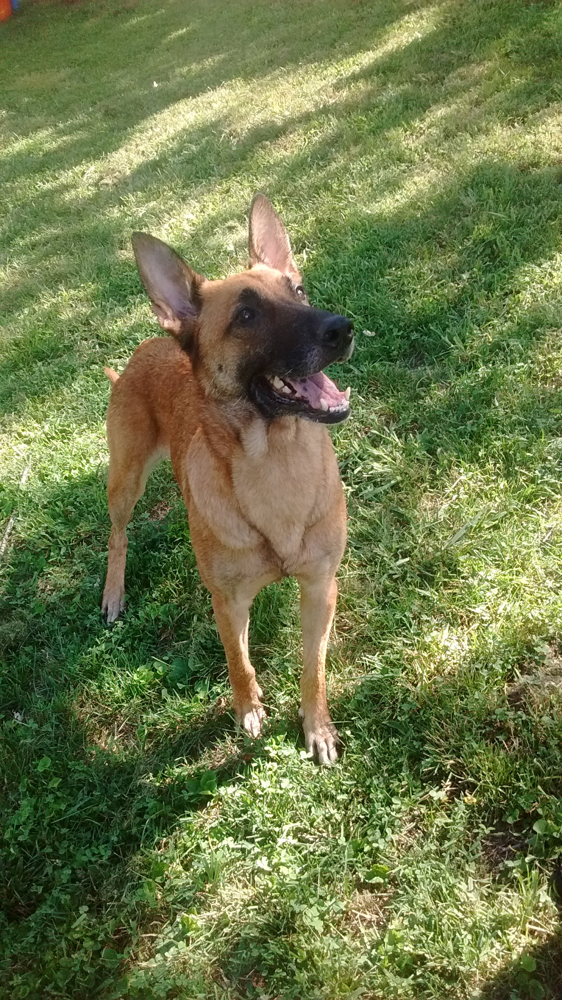

If you have some time, I have a story I'd like to tell you.
It's Augest 16th, 2016. A typical bright and summer day at home. It was so great that the whole family was outside. Well, everyone except me anyways. I was stuck indoors doing math homework. It's then that my sister comes in my room excited.
"There's a stray dog in our yard, come see!"
Sure enough, there was a fairly large dog in our front yard, and without a collar or harness. But she was surpringly friendly if she indeed a stray, as they usually have a waryness around humans. Afterall, mistreatment is usually the cause of their homelessness.
With that said, she was starving. We all could see the outline of her ribs. But we had extra dog food on hand as our neighbor's dog had passed away recently from old age, and they donated the wet dog food they still had left. We opened the can and this poor stray basically inhaled the entire thing. She was very grateful.
So we played fetch with her in the yard. Why not? It's not like we had somewhere to be. And she absolutely adored the exercise and attention. Eventually I got curious what her breed was. She looked kinda like a german shepard but not quite. But I knew how to quickly find out.
Microsoft had a browser tool named "WhatDog" in which you submitted pictures of a dog and the site would (try to) identify it for you. (www.what-dog.net is no longer online) Although I had only used it before to take pictures of other people and see what it would identify them as. I was about to use WhatDog for it's actual purpose, and so I snapped this picture:


This stray turned out to be a belgian malinois, (mal•a•wa) and are one of the most intelligant and hard-working breeds of dogs you can get. Apparently expensive too.
Anyways, my older brother - let's call him Rhett - decided she could use a bath, so he filled up the plastic kiddle pool with the hose. The dog didn't seem to mind, and mostly cooperated through her bath.
We didn't know her name, and just had to keep calling her "girl". We couldn't give her a name either because we couldn't keep her. The reason we couldn’t take her in ourselves was that we already had two dogs who were very territorial. Not that my mom would have been on-board for becoming a home for a large dog. So we were already planning to take her to the animal shelter.
It was at this time my eldest brother, Brad, suddenly pulled up to the street. He had long since moved out on his own, but he was here now for an unannounced visit. He saw the dog and asked where she came from, and commented on how he would love to have a dog like that. Once we told him that she was a stray and we were about to take her to the shelter, he said he would happily take her home with him. Brad had his first, very own dog.
I was quite happy that she wasn’t going to go to the shelter, because if she had, I probably would never have gotten the chance to see her again. But we got to see her the next day as Brad brought her by. He also told us her new name: Millie.
Brad had a friend at the veterinarian's office who looked over Millie. They said she was about 8-10 years old and confirmed to be a purebred belgian malinois. While she needed to gain some weight, she was in good health. It was sad to think someone abandoned her, especially since she was well trained.